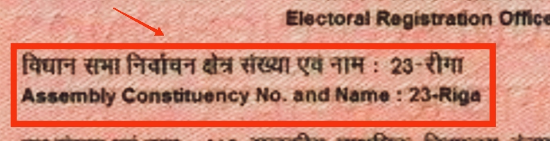

பிரதிநிதிகள்:
தமிழ்நாடு சட்டசபையில் 234 தொகுதிகள் உள்ளன. கடைசியாக தமிழ்நாடு சட்டசபைக்கு எம்எல்ஏக்கள் தேர்வு செய்யப்பட்டது மே 2021. திமுக வென்ற தொகுதிகள் 125, அதிமுக வென்ற தொகுதிகள் 65 இடங்கள், மற்றவர்கள் வென்றது 44 தொகுதிகள். தமிழ்நாடு சட்டசபைத் தேர்தலில் ஒவ்வொரு கட்சியிலிருந்தும் வென்றவர்களின் விரிவான பட்டியல்.
உங்கள் தொகுதி உங்களுக்குத் தெரியாவிட்டால், உங்கள் வாக்காளர் அடையாள அட்டையின் பின்புறம் உள்ள சட்டமன்றத் தொகுதி எண் & பெயரைப் பயன்படுத்தி உங்கள் தொகுதியைக் காட்டும் உள்ளீட்டு புலத்தில் அந்த எண்ணைத் தேடலாம்.
கட்சி வெற்றி அட்டவணை
| வ.எண் | தொகுதி பெயர் | வேட்பாளர் பெயர் | கட்சிகள் | வாக்குகள் | வாக்கு வித்தியாசம் | வாக்கு விகிதம் |
|---|